01
习近平给四川大学全体师生回信强调 发挥文理工医交叉融合优势 努力在服务新时代国家战略中当先锋作表率
近日，中共中央总书记、国家主席、中央军委主席习近平给四川大学全体师生回信，在四川大学建校130周年之际，向全体师生员工、广大校友表示祝贺。

近日，中共中央总书记、国家主席、中央军委主席习近平给四川大学全体师生回信，在四川大学建校130周年之际，向全体师生员工、广大校友表示祝贺。
本台今天（9月29日）播发央视快评《努力在服务新时代国家战略中当先锋作表率》。
今年是中国共产党成立105周年、红军长征胜利90周年。9月30日是国家设立的烈士纪念日，当天上午，习近平等党和国家领导人将同各界代表一起，在天安门广场向人民英雄敬献花篮。
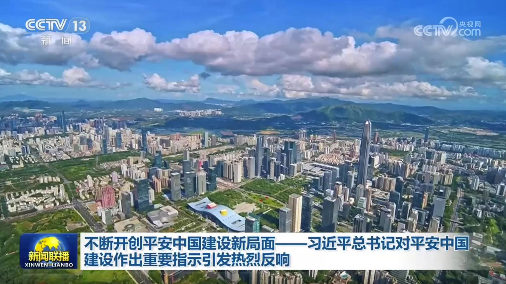
习近平总书记就建设更高水平平安中国作出的重要指示，深刻阐明了平安中国建设的重大意义与实践路径，在与会代表、全国政法战线和广大党员干部中引发热烈反响。大家表示，要坚定不移贯彻总体国家安全观，锚定“四个更加”目标，不断开创平安中国建设新局面。
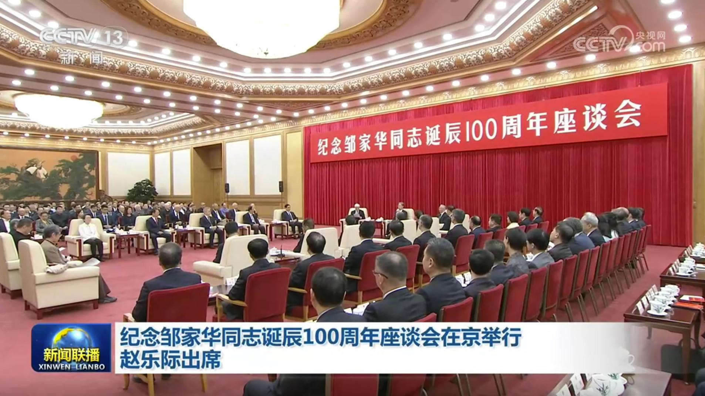
纪念邹家华同志诞辰100周年座谈会29日在京举行。中共中央政治局常委、全国人大常委会委员长赵乐际出席座谈会。
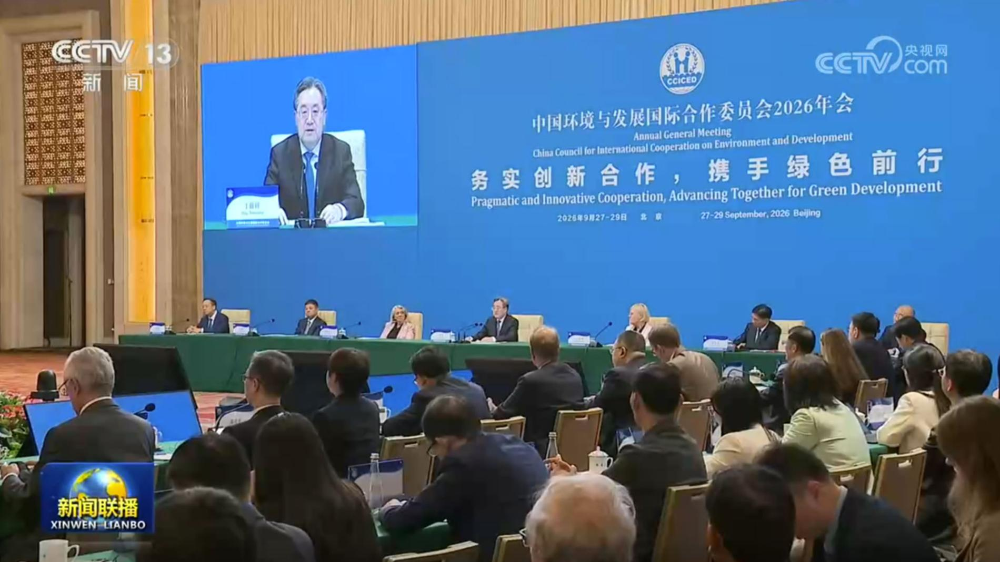
29日下午，中共中央政治局常委、国务院副总理、中国环境与发展国际合作委员会主席丁薛祥在北京出席国合会2026年年会并讲话。
国务院新闻办今天（9月29日）举行“开局起步‘十五五’”系列主题新闻发布会，农业农村部相关负责人介绍了“十五五”时期加快农业农村现代化、扎实推进乡村全面振兴的有关情况。
国务院新闻办今天（9月29日）举行“开局起步‘十五五’”系列主题新闻发布会，科技部相关负责人介绍“十五五”时期推进科技强国建设有关情况。
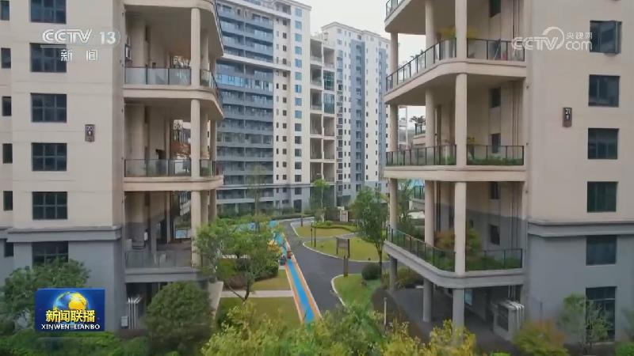
记者今天（29日）从财政部了解到，我国将从10月1日起对居民使用新发放商业性个人住房贷款购房实施贴息，以降低居民购房成本，更好支持和释放城乡居民刚性住房需求。
为纪念中国工农红军长征胜利90周年，两大长征主题展览今天（9月29日）在中国共产党历史展览馆开幕。其中，“伟大远征——中国工农红军长征档案展”集中展出以中央档案馆馆藏为主的230多份珍贵长征档案文献，中共中央撤离瑞金前夕与共产国际关于战略转移问题的往来电文、《红军长征记》誊清稿底稿等很多档案是首次面向公众展出。……
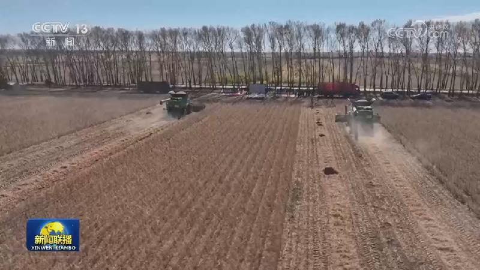
全国秋粮陆续进入收获期，各地抢抓时机，多措并举，确保秋粮丰收。各地水稻收获有序推进。吉林省今年水稻种植面积达1260万亩，在松原市红光农场改造后的千米条田里，水稻迎来丰收。吉林省今年继续加强农田土地平整、渠网配套与智慧管护，把盐碱滩、零散地块改造为稳产良田，不断筑牢粮食丰收基础。福建各地水稻陆续进入收割期。……
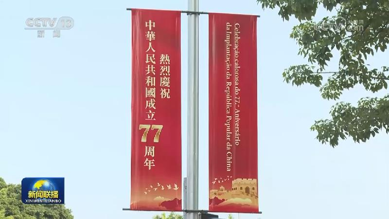
国庆将至，全国各地装扮一新，处处洋溢着喜庆祥和的节日氛围。五星红旗迎风招展。在内蒙古呼和浩特，从大街小巷到森林公园，中国红映衬秋日晴空与壮美山河。在广东广州，漫步城市街头，古朴骑楼与鲜艳的国旗交相辉映。重庆渝中区，2000多面五星红旗、精心布置花卉景观覆盖了主干道、重点商圈、跨江大桥。在安徽歙县，徽州古城内五星红旗随风招展，鲜花绿植点缀其间。……
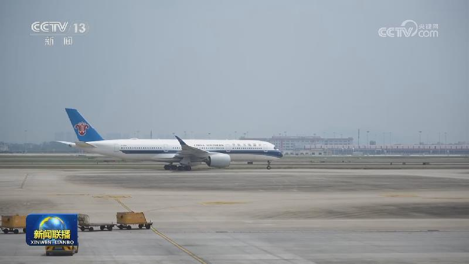
记者从交通运输部获悉，今年国庆假期，交通出行预计高位运行，10月1日出行人次将达到3.4亿人次，为日常人数的近2倍，租车出行量增长20%以上。交通运输部将启动智能研判系统，联合公安、交警等多部门在可能发生拥堵的路段预置力量，及时处置轻微剐蹭，减少公路出行拥堵。
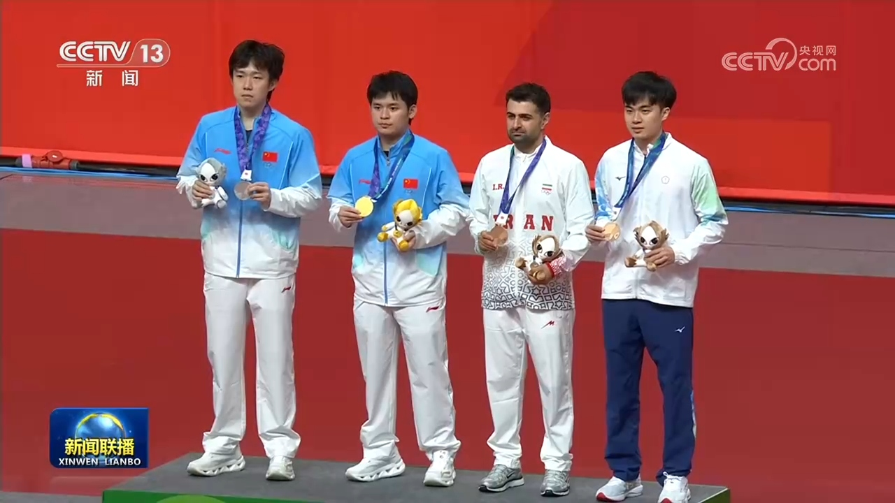
第二十届亚运会继续进行，举重比赛今天（9月29日）收官。吴艳夺得女子86公斤级金牌；李雯雯夺得女子86公斤以上级金牌。
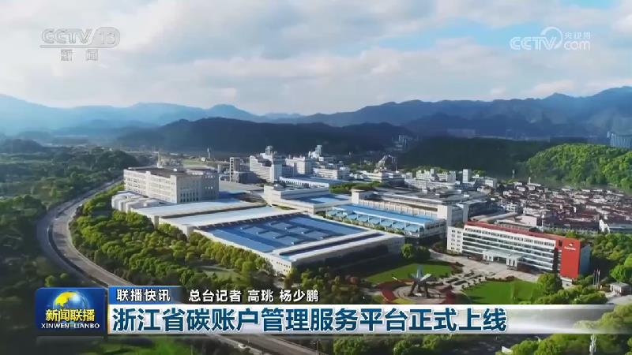
八部门出台19项金融支持服务业扩能提质举措
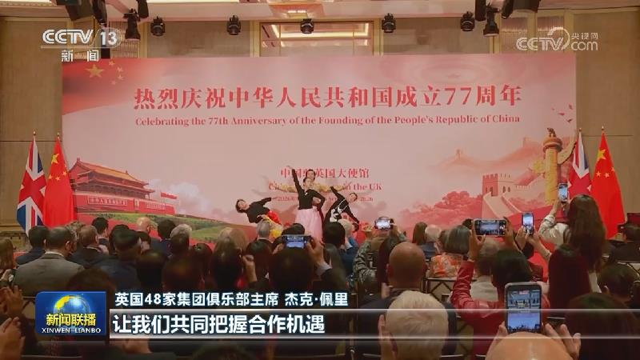
连日来，我驻外使馆、使团举行国庆招待会，与国际友好人士共同庆祝中华人民共和国成立77周年，畅叙友谊与合作。
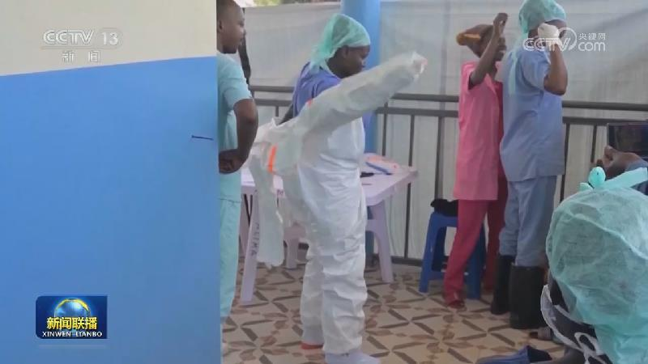
联合国粮农组织报告肯定中国生态修复